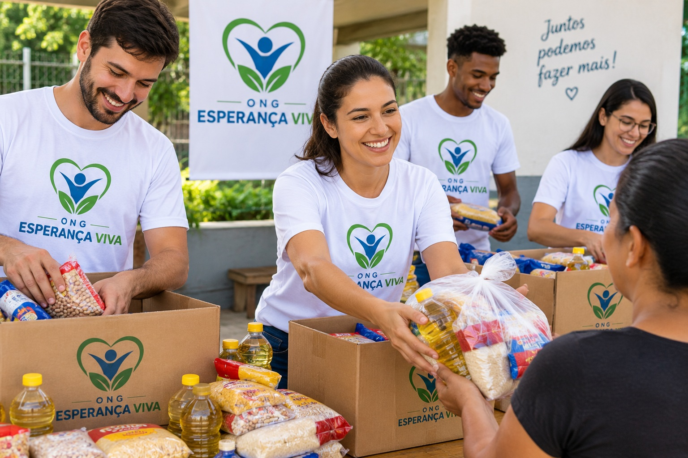

Transformando vidas através da esperança e da solidariedade
A ONG Esperança Viva atua com amor e compromisso para construir pontes de dignidade, oferecendo alimentação, reforço escolar e novas oportunidades para quem mais precisa.

Quem Somos
A ONG Esperança Viva é uma organização sem fins lucrativos dedicada a promover a inclusão social e garantir oportunidades para comunidades em situação de vulnerabilidade.
Inclusão Social
Criamos caminhos de acolhimento para que cada indivíduo reconheça seu valor e conquiste seu espaço na sociedade com dignidade e respeito.
Ação Comunitária
Estamos presentes nos bairros, ouvindo as famílias e oferecendo suporte direto com cestas de mantimentos, roupas e acolhimento humano.
Transparência Total
Cada doação e recurso arrecadado é gerido com integridade, prestando contas de forma clara para nossos parceiros e voluntários.
Nossa Missão
Transformar vidas por meio do voluntariado ativo, da educação e do apoio comunitário contínuo.